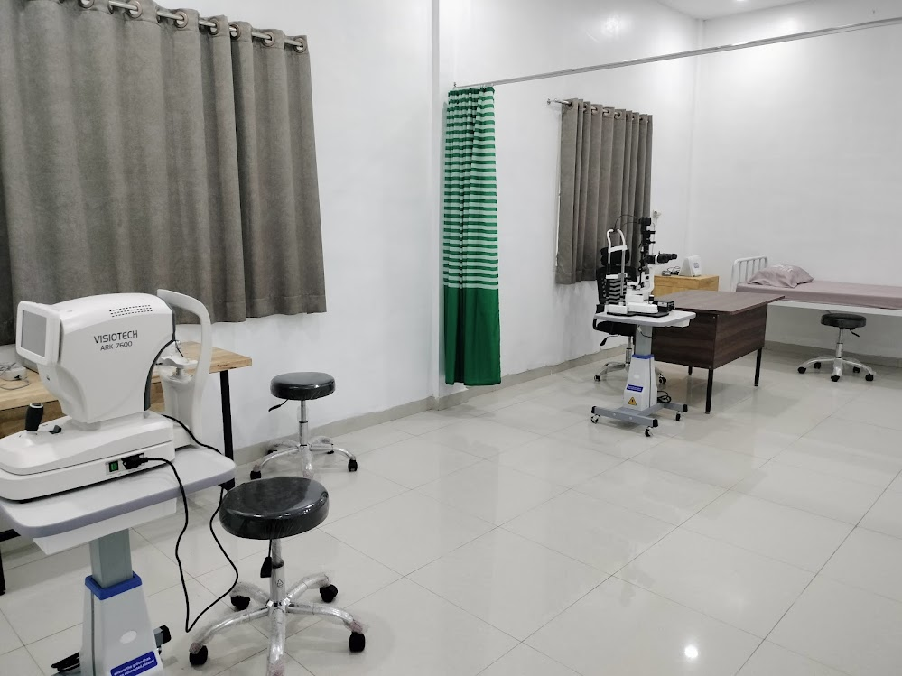
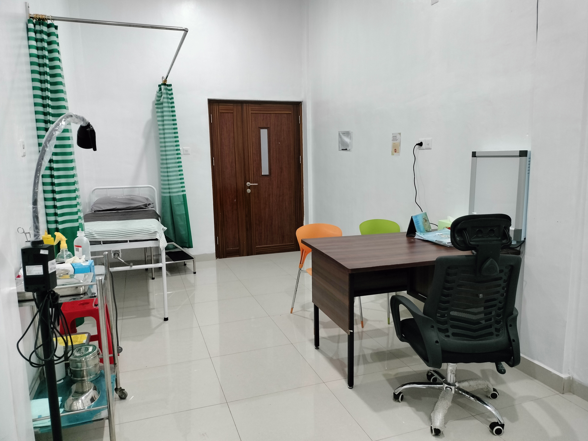
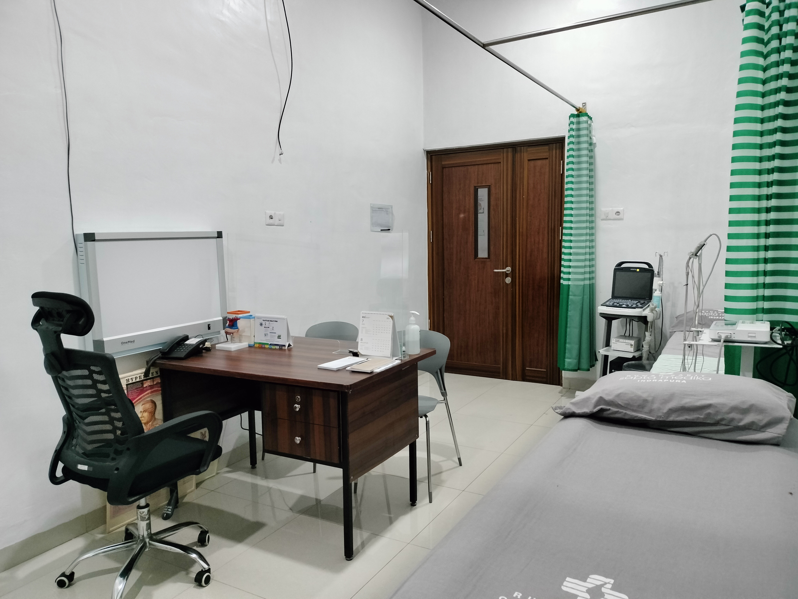
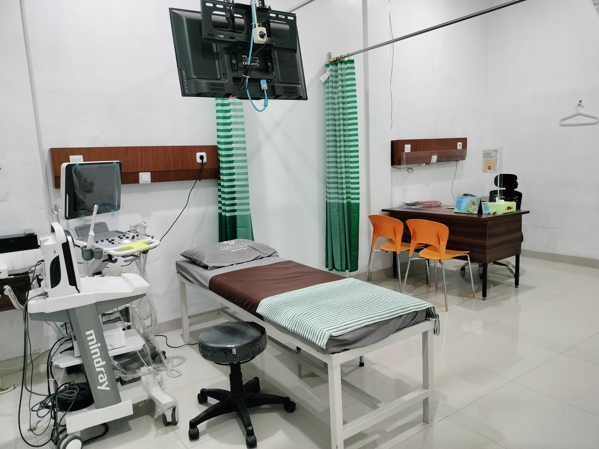
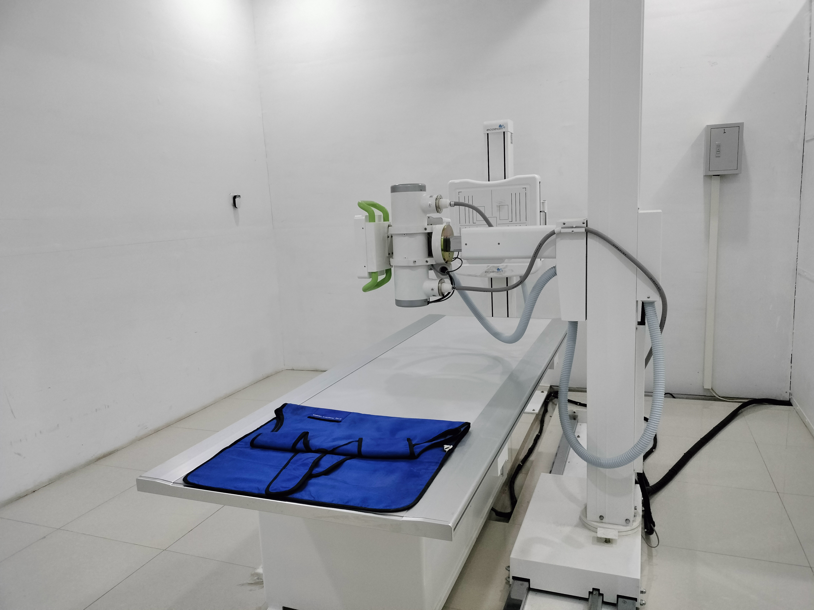
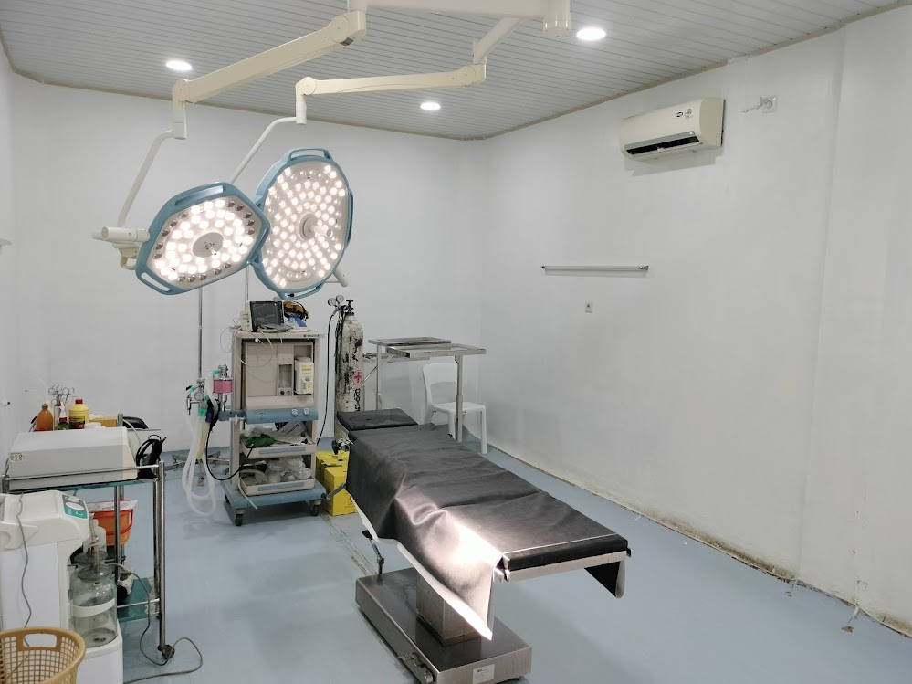

- Memberikan Pelayanan Kesehatan yang terjangkau dan kualitas dengan landasan kasih di Kabupaten Batubara.
- Menjadi Rumah Sakit yang unggul dan paripurna dalam pelayanan kesehatan di kabupaten Batu Bara.
TENTANG RSU SAPTA MEDIKA
Pelayanan Kesehatan yang Profesional & Humanis
RSU Sapta Medika Indrapura hadir untuk memberikan pelayanan kesehatan yang berkualitas, aman, dan berorientasi pada kebutuhan serta keselamatan setiap pasien.

24 Jam
Siap Melayani Anda
PROFIL
RS Sapta Medika
Rumah Sakit Sapta Medika merupakan sebuah Rumah Sakit Umum Swasta yang berada di Provinsi Sumatera Utara, terletak di jalan Datuk umar Palangki, Desa Tanah Merah, Batu Bara. Dengan jenis Rumah Sakit Tipe D yang ditetapkan pada tanggal 10 Mei 2021. RS Sapta Medika merupakan afiliasi dari RS Setio Husodo Kisaran. Diresmikan dan mulai beroperasional pada tanggal 02 Juni 2021.
24/7
Pelayanan Kesehatan
Profesional
Tenaga Medis
Humanis
Pelayanan Pasien
ARAH KAMI
Visi & Misi RSU Sapta Medika
Menjadi landasan dalam memberikan pelayanan kesehatan terbaik kepada masyarakat.
- Mendukung program-program Pemerintah khususnya dalam pelayanan kesehatan guna meningkatkan kualitas Sumber Daya Manusia (SDM) diKabupaten Batu Bara.
- Mewujudkan sarana dan prasarana yang modern untuk menunjang pelayanan kesehatan yang komprehensif dan berstandar nasional.
- Meningkatkan kemampuan dan keterampilan SDM melalui pelatihan dan pendidikan.
SAMBUTAN DIREKTUR
Melayani Dengan Kasih
“
Assalamu'alaikum Wr.Wb Dengan menyebut nama Allah SWT yang maha Pengasih lagi Maha Penyayang, kami panjatkan puja dan puji syukur atas kehadirat-NYA yang telah melimpahkan rahmat dan hidayahnya sehingga Company Profile ini dapat diterbitkan.
Company Profile ini menggambarkan sejarah berdirinya RS Sapta Medika sebagai landasan bahwa institusi ini memiliki organisasi yang kuat. Hal ini dapat dilihat dengan perubahan yang terjadi sejak berdiri d i tahun 2021 hingga sekarang, beberapa penambahan dan penyempurnaan dari fasilitas dan layanan telah dilakukan.
Rumah Sakit Sapta Medika juga telah bekerja sama dengan berbagai mitra dan stakeholders antara lain BPJS Kesehatan, BPJS Ketenagakerjaan, Asuransi Kesehatan, instansi pemerintahan, dan beberapa perusahaan nasional maupun internasional d i Kabupaten Batu Bara. Atas dasar itulah, Rumah Sakit Sapta Medika akan terus berupaya untuk dapat mengembangkan layanan dan melengkapi fasilitas yang ada sehingga dapat memenuhi kebutuhan masyarakat akan pelayanan kesehatan yang unggul dan paripurna sesuai dengan visi Rumah Sakit Sapta Medika. Kami mengucapkan terima kasih kepada semua pihak yang telah membantu dan bekerja sama dengan baik, dalam rangka mewujudkan motto RS yaitu "Melayani dengan Kasih". Dan semoga kami dapat menjadi rumah sakit yang dapat diandalkan bagi masyarakat Batu Bara dan sekitarnya.
[dr. Ahmad Fadhil Halimy Harahap]
Direktur RSU Sapta Medika Indrapura
FASILITAS KAMI
Fasilitas untuk Kenyamanan Pasien
RSU Sapta Medika menyediakan fasilitas pelayanan kesehatan untuk mendukung kebutuhan pasien dan keluarga.

IGD 24 Jam
Pelayanan kegawatdaruratan yang siap melayani pasien selama 24 jam.

Rawat Inap
Ruang perawatan yang nyaman untuk mendukung proses pemulihan pasien.

Poliklinik Anak
Pelayanan pemeriksaan, konsultasi, dan perawatan kesehatan anak oleh dokter spesialis anak.

Poliklinik Mata
Pelayanan pemeriksaan dan konsultasi kesehatan mata untuk membantu menjaga kualitas penglihatan Anda.

Poliklinik Bedah
Pelayanan konsultasi dan pemeriksaan pasien dengan kebutuhan tindakan bedah oleh dokter spesialis bedah.

Poliklinik Penyakit Dalam
Pelayanan konsultasi dan pemeriksaan untuk penanganan berbagai penyakit yang berkaitan dengan organ dalam.

Poliklinik OBGYN
Pelayanan kesehatan ibu dan wanita, meliputi konsultasi kehamilan, persalinan, serta kesehatan reproduksi.

Laboratorium
Pemeriksaan laboratorium untuk mendukung diagnosis dan pelayanan medis.

Radiologi
Fasilitas pemeriksaan penunjang untuk membantu proses diagnosis pasien.

Ruang Operasi
Fasilitas ruang operasi yang mendukung pelaksanaan tindakan pembedahan dengan pelayanan yang aman dan profesional.

Farmasi
Pelayanan obat dan kebutuhan farmasi bagi pasien rumah sakit.
KOMITMEN KAMI
Nilai dalam Setiap Pelayanan
01
Profesional
Memberikan pelayanan berdasarkan kompetensi dan standar pelayanan kesehatan.
02
Humanis
Melayani setiap pasien dengan empati, kepedulian, dan penghormatan.
03
Keselamatan
Mengutamakan keselamatan pasien dalam setiap proses pelayanan.
04
Integritas
Menjalankan pelayanan dengan tanggung jawab dan menjunjung tinggi etika.
BUTUH INFORMASI?
Hubungi Kami
→
Kami Siap Membantu Anda
Hubungi kami untuk mendapatkan informasi mengenai layanan dan fasilitas RSU Sapta Medika Indrapura.